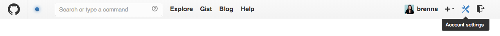
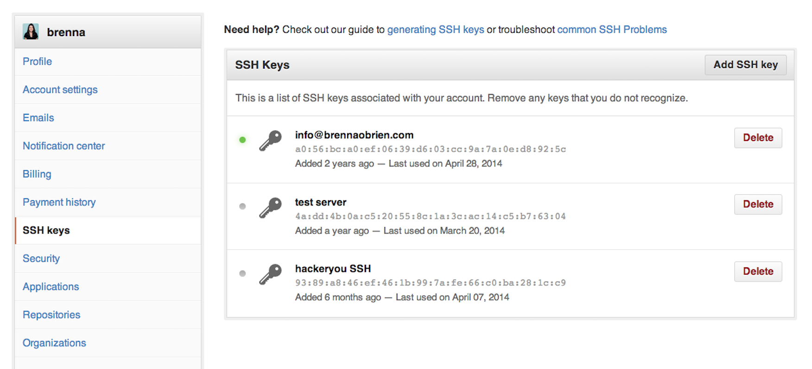

When working with a GitHub repository, you’ll often need to identify yourself to GitHub using your username and password. An SSH key is an alternate way to identify yourself that doesn’t require you to enter you username and password every time.
SSH keys come in pairs, a public key that gets shared with services like GitHub, and a private key that is stored only on your computer. If the keys match, you’re granted access.
The cryptography behind SSH keys ensures that no one can reverse engineer your private key from the public one.
The first step in using SSH authorization with GitHub is to generate your own key pair.
You might already have an SSH key pair on your machine. You can check to see if one exists by moving to your .ssh directory and listing the contents.
$ cd ~/.ssh
$ ls
If you see id_rsa.pub, you already have a key pair and don’t need to create a new one.
If you don’t see id_rsa.pub, use the following command to generate a new key pair. Make sure to replace your@email.com with your own email address.
$ ssh-keygen -t rsa -C "your@email.com"
When asked where to save the new key, hit enter to accept the default location.
Generating public/private rsa key pair.
Enter file in which to save the key (/Users/username/.ssh/id_rsa):
You will then be asked to provide an optional passphrase. This can be used to make your key even more secure, but for this lesson you can skip it by hitting enter twice.
Enter passphrase (empty for no passphrase):
Enter same passphrase again:
When the key generation is complete, you should see the following confirmation:
Your identification has been saved in /Users/username/.ssh/id_rsa.
Your public key has been saved in /Users/username/.ssh/id_rsa.pub.
The key fingerprint is:
01:0f:f4:3b:ca:85:d6:17:a1:7d:f0:68:9d:f0:a2:db your@email.com
The key's randomart image is:
+--[ RSA 2048]----+
| |
| |
| . E + |
| . o = . |
| . S = o |
| o.O . o |
| o .+ . |
| . o+.. |
| .+=o |
+-----------------+
The random art image is an alternate way to match keys but we won’t be needing this.
We now need to tell GitHub about your public key. Display the contents of your new public key file with cat:
$ cat ~/.ssh/id_rsa.pub
The output should look something like this:
ssh-rsa AAAAB3NzaC1yc2EAAAABIwAAAQEA879BJGYlPTLIuc9/R5MYiN4yc/YiCLcdBpSdzgK9Dt0Bkfe3rSz5cPm4wmehdE7GkVFXrBJ2YHqPLuM1yx1AUxIebpwlIl9f/aUHOts9eVnVh4NztPy0iSU/Sv0b2ODQQvcy2vYcujlorscl8JjAgfWsO3W4iGEe6QwBpVomcME8IU35v5VbylM9ORQa6wvZMVrPECBvwItTY8cPWH3MGZiK/74eHbSLKA4PY3gM4GHI450Nie16yggEg2aTQfWA1rry9JYWEoHS9pJ1dnLqZU3k/8OWgqJrilwSoC5rGjgp93iu0H8T6+mEHGRQe84Nk1y5lESSWIbn6P636Bl3uQ== your@email.com
Copy the contents of the output to your clipboard.
Login to github.com and bring up your account settings by clicking the tools icon.

Select SSH Keys from the side menu, then click the Add SSH key button.

Name your key something whatever you like, and paste the contents of your clipboard into the Key text box.
Finally, hit Add key to save. Enter your github password if prompted.
Going forward, you can use the SSH clone URL when copying a repo to your local machine.

This will allow you to bypass entering your username and password for future GitHub commands.